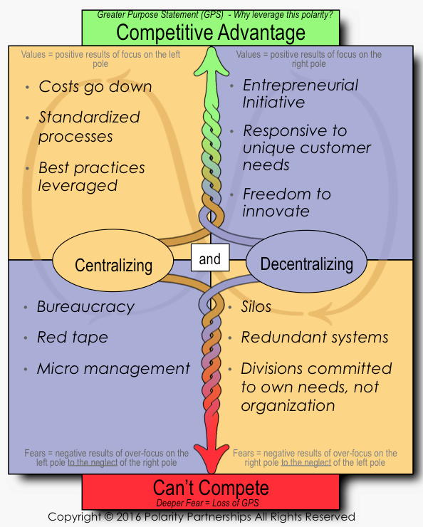

All software development involves trade-offs. This is equally true whether we’re talking about development processes or software products. Trying to adhere to absolutes – or to maximize one quality or performance factor while ignoring others – will generally require you to pretend that these trade-offs don’t exist, and sticking your head in this sort of sand is never a good idea.
Some of these trade-offs may be thought of as polarities. A polarity is most simply defined as a complex problem that has no solution. It might also be stated as an either/or question that has no single right answer. A more complete definition might be “A set of two opposing or contradictory extremes permitting wide variation along a spectrum of choices, with both opposing poles offering advantages and disadvantages.”
The pros and cons of a polarity are often represented in the form of a polarity map, in which each quadrant represents the pros or cons of one pole or another, as in the following example. The flowing arrows are meant to represent the ongoing dynamic process of seeking the optimal balance point at which the pros are maximized and the cons are minimized.

If you are facing a polarity, then you will want to engage in Polarity Management, rather than trying to pick one pole or the other.
Let’s look at some examples of what I mean.
Alan M. Davis describes this polarity in his book Just Enough Requirements Management: Where Software Meets Marketing:
If you do not pay enough attention to requirements, you endanger the project’s success by introducing too much risk. If you pay too much attention to requirements, you overburden the project and raise the likelihood of being late and over-budget.
Suzanne and James Robertson speak to the same polarity in their book, Mastering the Requirements Process, through use of animal analogies:
We are asking the reader to consider his or her project. Is it a small, fast, short-lived project? If so it is a rabbit project and you should do only certain things and omit others. For example, we suggest that rabbit projects should certainly discover all their requirements, but that they do not have to write a comprehensive specification. Rabbit projects can abbreviate their specification.
On the other hand, if you are outsourcing or are working on a military, medical or some government projects, you are an elephant. Elephants are slower and larger and have a need for formal documentation (try getting a new airplane past the FAA without a complete specification).
In their book Balancing Agility and Discipline: A Guide for the Perplexed, Barry Boehm and Richard Turner frame this polarity using the following examples:
Real-world examples argue both for and against agile methods. Responding to change is a critical success factor in many time-critical projects and was cited as a driver in the Netscape-Microsoft browser wars. On the other hand, over-responding to change was one of the identified causes for the $3 billion overrun of the U.S. Federal Aviation Administration’s Advanced Automation System for national air traffic control. We believe that common sense dictates the evaluation of both approaches for incorporation within the project manager’s technical and managerial toolbox.
Large projects can address more ambitious work statements and, in theory, can optimize their use of resources to deliver the most benefit for the least cost. Smaller projects, on the other hand, carry a higher probability of successful completion, and can deliver benefits in a more timely fashion.
According to a recent report from the Standish Group:
Large projects have twice the chance of being late, over budget, and missing critical features than their smaller project counterparts.
At the same time, breaking a large project into smaller chunks often introduces some inefficiencies, and so may tend to drive up overall costs and durations.
Teams that are overly constrained by their leadership are not likely to get much accomplished. On the other hand, teams that are given free rein to do whatever they think important may fail to meet objectives important to the organization as a whole.
If a team doesn’t please their primary customers, then they will not get very far. On the other hand, if they focus exclusively on pleasing their primary customers, then they may fail to meet governance and compliance requirements imposed on their projects by other stakeholders, and may overlook opportunities for breakthrough innovation.
Reuse of existing software can reduce costs, but can also put limits on a team’s ability to innovate.
Measuring twice before cutting once may reduce the potential for errors and rework, but delivering usable results quickly may meet pressing business needs more expeditiously than a long, deliberative development cycle.
Doing careful estimates and refining them as you proceed will maximize your chances of performing to your plan. On the other hand, “Just Do It” may be more appropriate for efforts that need to complete quickly, even if their costs are higher than anticipated.
Long-term strategic visions can offer compelling, sweeping changes, but achievement of short-term tactical objectives can often be done at lower cost and risk and with more timely and reliable delivery of benefits.
Higher level languages such as Java often offer greater programmer productivity. On the other hand, low-level languages such as C can sometimes offer improved software execution speed.
For more IT issues that often need a balanced approach, see the Pagan Tuna post, “What does it mean to be World Class IT?.”
Each of these polarities requires a project’s leadership to strike a balance that maximizes the advantages for their particular project, and minimizes the disadvantages. All of these decisions involve trade-offs. There are no perfect answers. If you can approach polarities with this understanding, then you have a decent chance of coming up with reasonable answers that will allow your project to succeed. On the other hand, if you insist on making some of these poles sacred cows that can’t be questioned, then your project is likely to run into problems.
Balancing these polarities appropriately requires judgment. Such judgment is usually best wielded by an individual, or a small group of like-minded leaders who work well together. Since an absolute principle often sounds intuitively more appealing than a balanced middle ground, larger groups and those less well acquainted with project details may have a harder time making these sorts of finely calibrated judgments. For this reason, in my experience, it is hard for projects to receive much of this sort of help from those working in executive leadership or governance or oversight roles, or from committees of any kind.
I have also found that traditional risk management often fails to help achieve appropriate balance on any of these polarities, since risk mitigation efforts often simply serve as rationalizations for staying the current course on the project, rather than making any true course corrections by re-balancing any of these polarities.
While Barry Goldwater may have famously said that “extremism in defense of liberty is no vice,” I am strongly suggesting that extremism in defense of any of these poles on a software development project is very likely to be a vice. This is not to say that it’s best to always proceed down the middle of the road, but that it’s best to always have an informed, open-minded approach to achieving appropriate balance of all these polarities, in light of the characteristics of a particular project.
Software development is difficult enough under the best of circumstances. Turning any of these poles into absolute principles, to be defended as fundamental articles of faith, is likely to burden your software development project with more problems than it can handle.